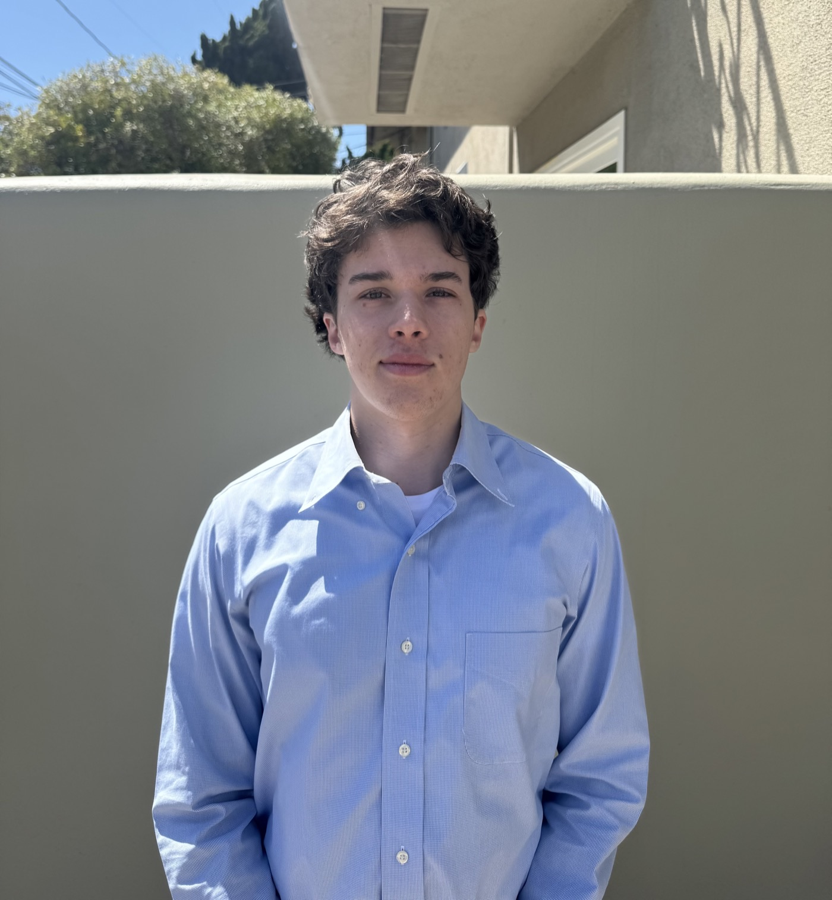

About

Hello, my name is Zo Keck-Choeff and I am currently a fourth year student at the University of California, Santa Barbara pursuing a BA in Economics and Minor in Media Arts and Design.

Hello, my name is Zo Keck-Choeff and I am currently a fourth year student at the University of California, Santa Barbara pursuing a BA in Economics and Minor in Media Arts and Design.